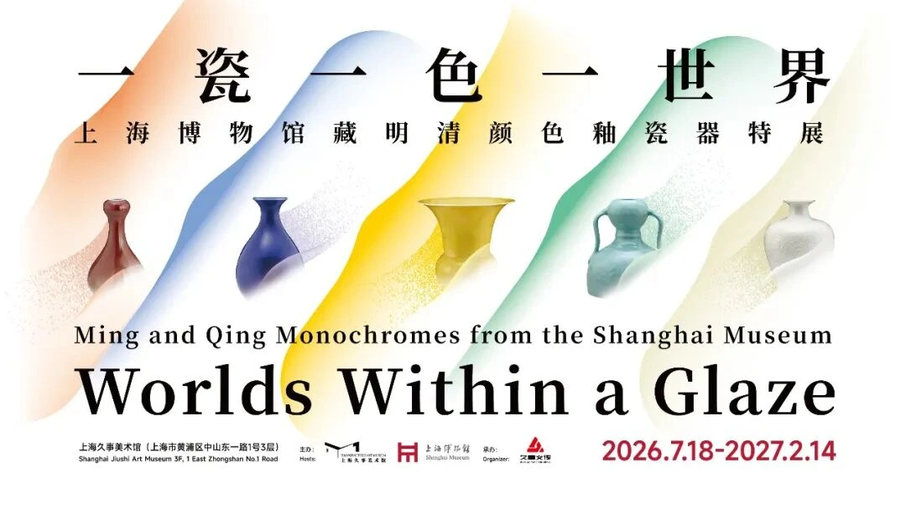

以色观瓷
红 · 蓝 · 黄 · 白 · 青 · 其他
这一场，留在照片里。
从器物到釉面，从完整轮廓到细部，慢慢看。
器物与展签 / IMG_5404
红釉长颈瓶
02 / 72
照片标题为观看索引；器物信息以现场展签为准。← → 切换 · 点击大图细看
关于这次留影
一件瓷器，一种釉色。上海博物馆与上海久事美术馆联合呈现50件明清颜色釉瓷器，以五个色彩篇章展开观看。
这份记录保留了2026年10月10日的72张现场照片，包含器物、细节、展文与现场。五色之外的照片收在“其他”中。
哪一种颜色，让你停留了更久？